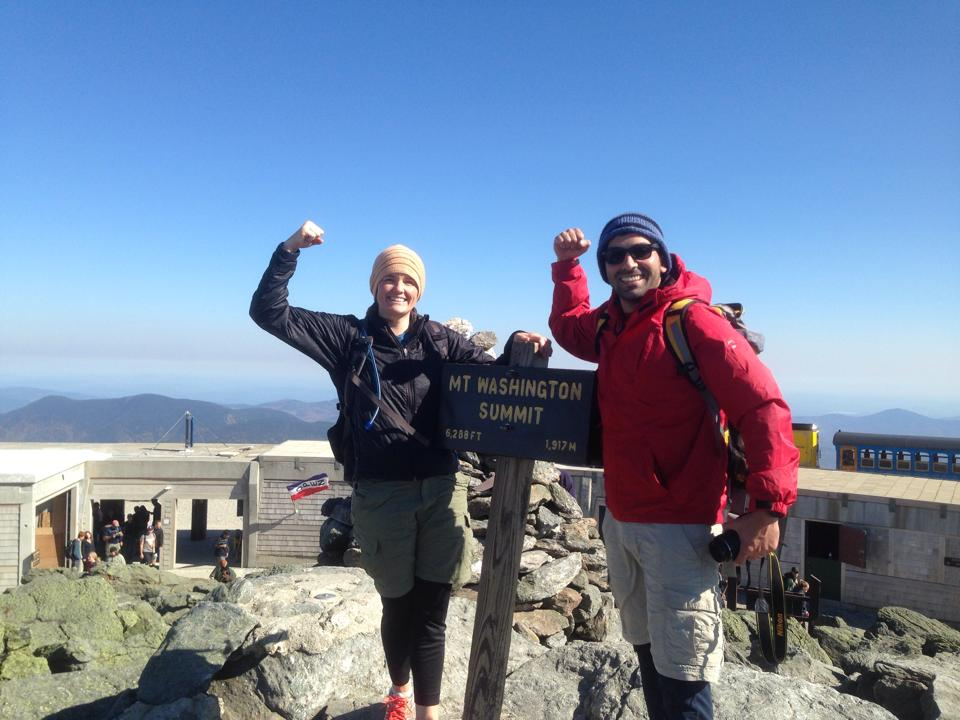
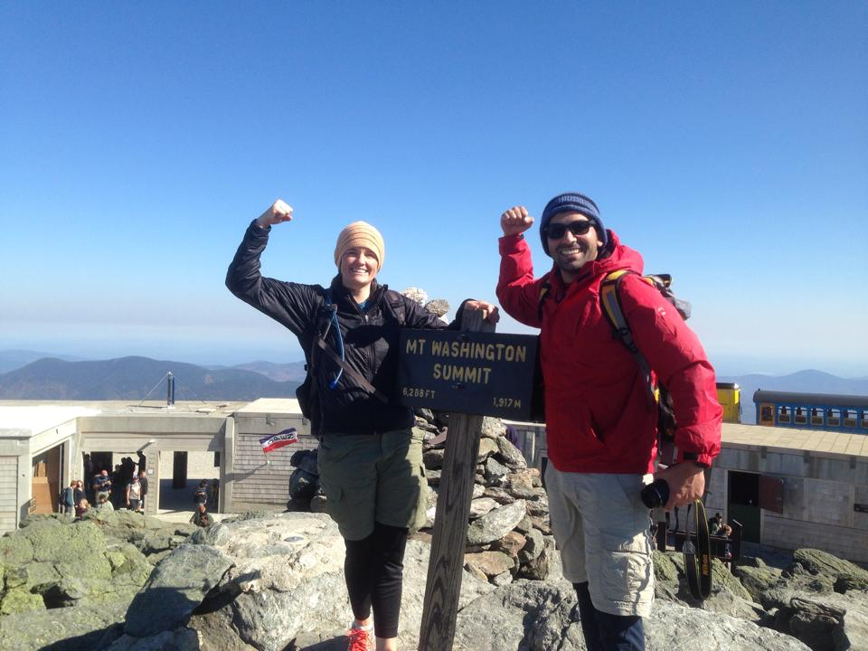

Hi, I am so glad that you are here, visiting my super cool to be web site. I am currently studying software development at Code Fellows PDX and this is my firs web site. I am sure there will be a lot of improvements as I learn more about html, css and javascript concepts and applications. It is a work in progress, so please check this web site every once in a while to see my ass kicking progress.
Let me tell you about myself a little bit;
I have been working in dental field since 2010, as a maxillofacial surgical assistant, dental technician/ceramist and most recently dental laboratory owner( I make teeth). I am the founder of Original32 Dental Lab, and serving dental professionals in metro Portland Area. For more info about Original32 please Click Here!!
Originally from Turkey, I have lived in Boston for the last decade. My family and I recently relocated to Oregon to be closer to family and experience a new lifestyle in the country. We began transitioning this summer, and after some international travel and a cross-country road-trip we arrived in Hillsboro about six months ago. While bittersweet to leave our friends and careers in Boston, I am optimistic and ready to establish myself in metro Portland area.
I am 33 years old and getting older ’n older like everyone else :) I have
two wonderful children; Emre and Leyla. Emre is 4yrs old and he is
attending to a pre school program at West Side Montessori. Leyla is 6 yrs
old and she is a kindergartner at FarmingtonView Elementary School. My
beautiful wife Sierra and I met almost 10 years ago and have been married
for almost 9 years. It has been the best years of my life. We like to
spend time with family&friends and enjoy the outdoors.
My hobbies are:
If you have similar interests, shoot me an email at koral.erdem@gmail.com
Thank you for playing the GuessingGame. Here are your answers and results:
 
